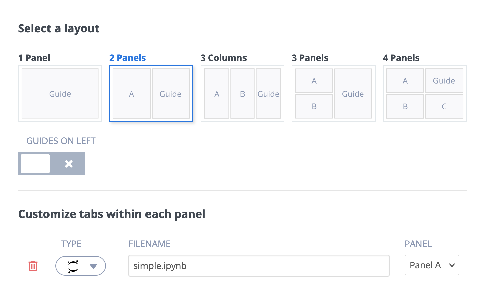

Jupyter¶
You can set up your assignment to provide your students with a Jupyter Notebook as the default code editor or to open JupyterLab. More information about Jupyter Notebook and Jupyter Lab.
Note
The Code Playback functionality will not work for code your students enter in a Jupyter Notebook.
Using Jupyter Notebooks in Codio¶
If you plan to use Jupyter Notebook and optionally nbgrader, you must use a stack configured to support them. As these items are often difficult to configure, we recommend that you select the Jupyter Lab stack from our list of Certified Stacks.
More information about grading using nbgrader.
Warning
Pair Programming should not be used for Jupyter Notebook.
Note
Notebook files are only supported in the root (/home/codio/workspace or ~/workspace) folder.
Opening a Jupyter Notebook or JupyterLab¶
There are multiple ways to provide your students with access to their Jupyter Notebook.
The following are a few of the possibilities.
Modify the Preview menu so that students can access the Jupyter server through the menu and open it in Codio or in a new browser tab.
To customize the Preview button, modify this section of the .codio file:
{ // Preview button configuration "preview": { "Jupyter Notebook": "https://{{domain3000}}/" } }
Use guides to create a layout that automatically opens a pane containing JupyterLab or a particular Jupyter NoteBook file. The example below shows a 2-Panel layout. You can also
Create a 2-Panel Layout.
Add a tab and for type select - “File” or select the “Jupyter Lab” type.
Enter the name of your file into the Filename field or drag it into it from the file tree.
You can change the guide settings to Collapsed on Start and the Jupyter pane will open with the Guides collapsed.

If you don’t use Guides, consider creating a README.md file with instructions on accessing the Jupyter Notebook. When there are no guides, the README.md will auto-open for students. You can tell students to click on the file in the file tree if you haven’t configured another way to open it.
Virtual Coach and Jupyter Notebook¶
An extension will allow Virtual Coach to access the contents of your Jupyter Notebook and detect errors when running Jupyter cells. This extension is already installed in all the Codio Certified Jupyter stacks. You can add the extension if you have your own custom Jupyter stack.
Use the Tools > Install Software (more information) menu item to install the Jupyter Codio extension.
After you have completed installing the software you will need to create a new stack or a new stack version to provide this for your students.
The Codio Jupyter stacks based on Ubuntu 22.04 all utilize JupyterLab, and you should open the file as a JupyterLab (see above) to use all the features of the extension.
You can check if JupyterLab is installed in your stack by entering the command jupyter --version in the terminal. This command will inform you which Jupyter packages are installed. If JupyterLab is not installed, you should open the Jupyter Notebook as a file.